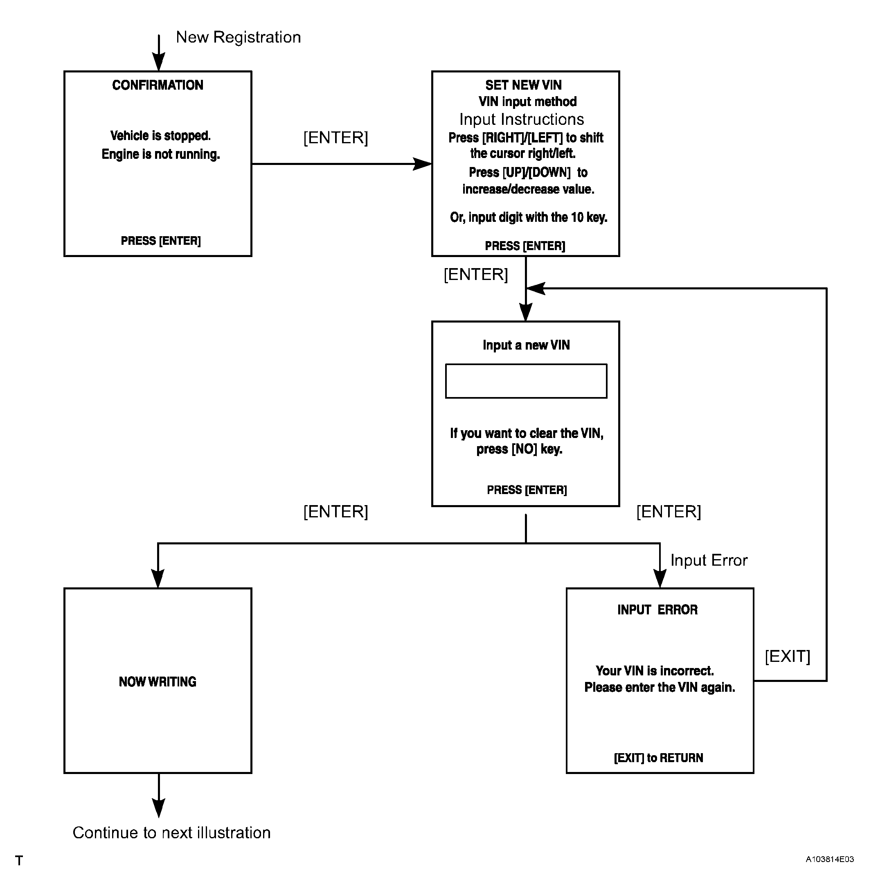

Parts Location: Registration
HINT:
The VIN is a 17-digit alphanumeric vehicle identification number. The intelligent tester is required to register the VIN.
- INPUT INSTRUCTIONS
HINT:
Below are the general VIN input instructions using the intelligent tester.
- General
The arrow buttons (UP, DOWN, RIGHT and LEFT) and numerical buttons (0 to 9) are used to input the VIN.
- Cursor Operation
To move the cursor around the tester screen, press the RIGHT and LEFT buttons.
- Alphabetical Character Input
- Press the UP and DOWN buttons to select the desired alphabetical character.
- After selection, the cursor should move.
- Numeric Character Input
- Press the numerical button corresponding to the number that you want to input.
HINT:
Numerical characters can also be selected and input using the UP and DOWN buttons.
- Press the numerical button corresponding to the number that you want to input.
- Correction
- After input, the cursor should move.
- When correcting the input character(s), put the cursor onto the character using the RIGHT or LEFT buttons.
- Finishing Input Operation
- Make sure that the input VIN matches the vehicle VIN after input.
- Press the ENTER button on the tester.
- General
- READ VIN (Vehicle Identification Number)
HINT:
Below are the VIN reading instructions. Use the procedures and flowchart below. Reading the VIN stored in the ECM is necessary when comparing it to the VIN provided with the vehicle.
- Read VIN using the intelligent tester.
- Check the vehicle's VIN.
- Connect the intelligent tester to the DLC3.
- Turn the ignition switch ON.
- Turn the tester ON.
- Enter the following menus: DIAGNOSIS / ENHANCED OBD II / VIN.
- WRITE VIN
HINT:
Below are the VIN writing instructions. Use the procedures and flowchart below. This process allows the VIN to be input into the ECM. If the ECM is changed, or the ECM VIN and vehicle VIN do not match, the VIN can be registered or overwritten in the ECM by following this procedure.
- Write VIN using the intelligent tester.
- Connect the intelligent tester to the DLC3.
- Turn the ignition switch ON.
- Turn the tester ON.
- Enter the following menus: DIAGNOSIS / ENHANCED OBD II / VIN.

Courtesy of © TOYOTA, LICENSE AGREEMENT TMS1002